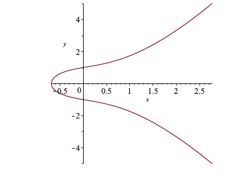
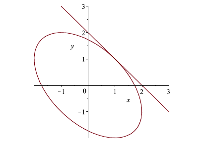

3.5 Implicit Differentiation
So far, all of the functions that we have differentiated are of the form \(y = f(x)\). Of course, not all curves are functions nor are all curves of the form \(y = f(x)\). That said, if the function is continuous, one may still find the equation of a tangent line at a given point. In this chapter, we explore differentiating curves of the form \(f(x,y) = c\), where \(c\) is constant.
Example: Suppose \(x^2 + y^2 = 25\). Find \(\dfrac{dy}{dx}\).
Solution: If we try to solve this equation for \(y\), we end up with 2 different function pieces. In some examples, we will not be able to solve for \(y\). We can treat \(y\) as a function of \(x\) and differentiate it as we would any other function. With this in mind, \(y^2\) is a composite function with derivative \(2y\frac{dy}{dx}\). Therefore, \[\begin{align*} \dfrac{d}{dx} x^2 + y^2 &= \dfrac{d}{dx} 25\\ 2x + 2y\dfrac{dy}{dx} &= 0\\ 2y\dfrac{dy}{dx} &= -2x\\ \dfrac{dy}{dx} &= -\dfrac{x}{y}. \end{align*}\] Therefore, we see that \(\dfrac{dy}{dx} = \dfrac{-x}{y}\).
Example: Suppose \(xy = 1\). Find \(\dfrac{dy}{dx}\).
Solution: The function \(xy\) is the product of two functions: \(x\) and \(y = y(x)\). So, \[\begin{align*} \dfrac{d}{dx} xy &= \dfrac{d}{dx} 1\\ (1)y + x\dfrac{dy}{dx} &= 0\\ x\dfrac{dy}{dx} &= -y\\ \dfrac{dy}{dx} &= -\dfrac{y}{x}. \end{align*}\] Therefore, we see that \(\dfrac{dy}{dx} = \dfrac{-y}{x}\).
Example: Suppose \(e^{x+y} = \sin(y^2)\). Find \(\dfrac{dy}{dx}\).
Solution: Both the functions on the left and the right are composite. \[\begin{align*} \dfrac{d}{dx} e^{x+y}&= \dfrac{d}{dx} \sin(y^2)\\ e^{x+y}\dfrac{d}{dx} (x+y)&= \cos(y^2)\dfrac{d}{dx} y^2\\ e^{x+y} \left(1 + \dfrac{dy}{dx} \right)&= \cos(y^2)2y\dfrac{dy}{dx}\\ e^{x+y}+ \dfrac{dy}{dx}e^{x+y} &= \cos(y^2)2y\dfrac{dy}{dx}\\ \dfrac{dy}{dx}e^{x+y} - \cos(y^2)2y\dfrac{dy}{dx} &= - e^{x+y} \\ \dfrac{dy}{dx}\left(e^{x+y} - \cos(y^2)2y \right) &= - e^{x+y} \\ \dfrac{dy}{dx}&= - \dfrac{e^{x+y}}{e^{x+y} - \cos(y^2)2y}. \end{align*}\] Therefore, we see that \(\dfrac{dy}{dx} = - \dfrac{e^{x+y}}{e^{x+y} - \cos(y^2)2y}\).
Example: Suppose \(y^2 = x^3 + x + 1\). Find \(\dfrac{dy}{dx}\).
Solution: A function like this is called an elliptic curve and is quite important in cryptography. We differentiate both sides. \[\begin{align*} \dfrac{d}{dx} y^2&= \dfrac{d}{dx} x^3 + x + 1\\ 2y\dfrac{dy}{dx} &= 3x^2 + 1\\ \dfrac{dy}{dx}&=\dfrac{3x^2 + 1}{2y}. \end{align*}\] Therefore, we see that \(\dfrac{dy}{dx} =\dfrac{3x^2 + 1}{2y}\).
|  |
|---|
Example: Let \(x^2 + xy + y^2 = 3\). Find the equation of the tangent line at \((1,1)\).
Solution: We differentiate both sides of the equation. \[\begin{align*} \dfrac{d}{dx} x^2 + xy + y^2&= \dfrac{d}{dx} 3\\ 2x + (1)y + x\dfrac{dy}{dx} + 2y\dfrac{dy}{dx} &=0\\ \dfrac{dy}{dx}(x + 2y)&=-2x - y\\ \dfrac{dy}{dx}&=\dfrac{-2x - y}{x + 2y}. \end{align*}\] Therefore, we see that \(\dfrac{dy}{dx} =\dfrac{-2x - y}{x + 2y}\). At \((1,1)\), the slope of the tangent line is \(m =-1\). So, the equation of the tangent line at \((1,1)\) is \(y - 1 = -1(x-1)\) or \(y = -x + 2\).
|  |
|---|
Practice Problems
- Find \(\dfrac{dy}{dx}\).
- \(8x^2 + y^2 = 25\)
- \(x^4 + y^4 = 2\)
- \(x^7 + y^7 = 49\)
- \(\sqrt{y} + \sqrt{x} = 1\)
- \(\sin(xy) = x\cos(y)\)
- \(y^5 + x^3y^2 = 2x^2y\)
- \(x^3y^3 + x\sin(y) = 10\)
- \(\sqrt{x+y} = \tan(y^2)\)
- \(\cot(y/x) = x^2 + y\)
- \(\sec(xy) = \dfrac{y}{1 + x^2}\)
- Find the equation of the tangent line at the indicated point.
- \(x^2 + xy + y^2 = 12\) at \(a = (2,2)\)
- \(3(x^2 + y^2)^2 = 25(x^2 - y^2)\) at \(a = (2,1)\)
- \(x^2 + 2xy + y^2 = 1\) at \(a = (0,1)\)
- \(\cos(xy) + x^2 = \sin(y)\) at \(a = (1,\pi/2)\)
- \(y^2(y^2 - 1) = x^2\tan(y)\) at \(a = (0,1)\)
- \(x^2 + y^2 = 9\) at \(a = (2,\sqrt{5})\)
Derivatives of Inverse Trigonometric Functions
In this chapter, we find the derivatives of the inverse trigonometric functions.
Theorem (Inverse Trig Derivatives): The following derivatives hold on their domains:
\[\begin{array}{ll}\displaystyle \frac{d}{{dx}}\left( {{{\sin }^{ - 1}}x} \right) = \frac{1}{{\sqrt {1 - {x^2}} }} & \hspace{1.0in}\displaystyle \frac{d}{{dx}}\left( {{{\cos }^{ - 1}}x} \right) = - \frac{1}{{\sqrt {1 - {x^2}} }}\\ \displaystyle \frac{d}{{dx}}\left( {{{\tan }^{ - 1}}x} \right) = \frac{1}{{1 + {x^2}}} & \hspace{1.0in}\displaystyle \frac{d}{{dx}}\left( {{{\cot }^{ - 1}}x} \right) = - \frac{1}{{1 + {x^2}}}\\ \displaystyle \frac{d}{{dx}}\left( {{{\sec }^{ - 1}}x} \right) = \frac{1}{{\left| x \right|\sqrt {{x^2} - 1} }} & \hspace{1.0in}\displaystyle \frac{d}{{dx}}\left( {{{\csc }^{ - 1}}x} \right) = - \frac{1}{{\left| x \right|\sqrt {{x^2} - 1} }}\end{array}.\] \(\;\)
We prove this theorem in the next section.
Example: Let \(y = \sin^{-1}(x) + 4\tan^{-1}(x)\). Find the derivative of \(y\).
Solution: Using the inverse trig derivatives, we find that \[y^{\prime} = \dfrac{1}{\sqrt{1-x^2}} + \dfrac{4}{1+x^2}.\]
Example: Let \(f(x) = \sec^{-1}(3x + 1) + \sqrt{\cot^{-1}(x)}\). Find \(f^{\prime}(x)\).
Solution: Using the inverse trig derivatives, we find that \[\begin{align*} f^{\prime}(x) &= \dfrac{1}{|x|\sqrt{x^2-1}}(3) + \dfrac{1}{2}(\cot^{-1}(x))^{-1/2}\dfrac{-1}{1+x^2}\\ &= \dfrac{3}{|x|\sqrt{x^2-1}} + \dfrac{-1}{2 \sqrt{\cot^{-1}(x)}(1+x^2)}.\end{align*}\]
Example: Differentiate \(\sqrt{x}\csc^{-1}(x)\).
Solution: Let \(f(x) =\sqrt{x}\csc^{-1}(x)\). By the product rule, \[f^{\prime}(x) = \dfrac{1}{2} x^{-1/2}\csc^{-1}(x) + \dfrac{-\sqrt{x}}{|x|\sqrt{x^2-1}}.\]
Example: Differentiate \(\dfrac{\arctan(x)}{e^x}\).
Solution: Let \(f(x) =\dfrac{\arctan(x)}{e^x}\). By the quotient rule, \[f^{\prime}(x) = \dfrac{\dfrac{1}{1+x^2}e^x - e^x\arctan(x)}{e^{2x}} = \dfrac{\dfrac{1}{1+x^2} - \arctan(x)}{e^{x}}.\]
Practice Problems
- Find the derivative.
- \(y = 2\cos(x) + 4 \cos^{-1}(x)\)
- \(f(x) = \csc^{-1}(x) - 2\cot^{-1}(x)\)
- \(y = x^7 \csc^{-1}(x) + \ln(x)\sec^{-1}(x)\)
- \(g(x) = x^2 + \ln(x)\arctan(x) + \arcsin(x)/x\)
- \(f(x) = \dfrac{\sin(x)}{\arcsin(x)}\)
- \(y = \arcsin(e^x) + \cos^{-1}(\ln(x))\)
- \(y = \arcsin(\arctan(x))\)
- \(y = \ln(\cos^{-1}(x))\)
- \(f(x) = \dfrac{\arcsin(x)}{\arctan(x)}\)
- \(g(x) = \dfrac{x^4\sec^{-1}(x)}{e^x\arctan(x)}\)
- Find \(dy/dx\).
- \(y^2x = \csc^{-1}(y)\)
- \(\cos(y) = \arcsin(x)\)
- \(\dfrac{y}{\arctan(x)} = xy\)
- \(\sec^{-1}(xy) = xy^2\cos^{-1}(xy^2)\)
Find the equation of the tangent line to \(y = \arcsin(x/2)\) at \(x = -\sqrt{2}\).
Find the equation of the tangent line to \(y = \arctan(\ln(x))\) at \(x = e\).
Proof of Inverse Trig Derivative Laws
In this chapter, we prove the derivatives of each inverse trig function using largely implicit differentiation. We state the theorem below and prove the first 3 derivatives through example. The final 3 derivatives are similar and left as an exercise.
Theorem (Inverse Trig Derivatives): The following derivatives hold on their domains:
\[\begin{array}{ll}\displaystyle \frac{d}{{dx}}\left( {{{\sin }^{ - 1}}x} \right) = \frac{1}{{\sqrt {1 - {x^2}} }} & \hspace{1.0in}\displaystyle \frac{d}{{dx}}\left( {{{\cos }^{ - 1}}x} \right) = - \frac{1}{{\sqrt {1 - {x^2}} }}\\ \displaystyle \frac{d}{{dx}}\left( {{{\tan }^{ - 1}}x} \right) = \frac{1}{{1 + {x^2}}} & \hspace{1.0in}\displaystyle \frac{d}{{dx}}\left( {{{\cot }^{ - 1}}x} \right) = - \frac{1}{{1 + {x^2}}}\\ \displaystyle \frac{d}{{dx}}\left( {{{\sec }^{ - 1}}x} \right) = \frac{1}{{\left| x \right|\sqrt {{x^2} - 1} }} & \hspace{1.0in}\displaystyle \frac{d}{{dx}}\left( {{{\csc }^{ - 1}}x} \right) = - \frac{1}{{\left| x \right|\sqrt {{x^2} - 1} }}\end{array}.\] \(\;\)
Example: Show that \(\dfrac{d}{dx} \arcsin(x) = \dfrac{1}{\sqrt{1-x^2}}\).
Solution: Let \(y = \sin^{-1}(x)\) so that \(x = \sin(y)\). So, \(\cos(\sin^{-1}(x)) = \cos(y)\). Since \(\cos^2(y) + \sin^2(y) = 1\), we know that \[\cos(\sin^{-1}(x)) = \cos(y) = \sqrt{1-\sin^2y} = \sqrt{1-x^2}.\]
Let \(f(x) = \sin(x)\) and \(g(x) = \sin^{-1}(x)\). Clearly, \(f\) and \(g\) are inverses of each other. As a result, we know that \[\begin{align*} g^{\prime}(x) &= \dfrac{1}{f^{\prime}(g(x))}\\ &= \dfrac{1}{\cos(\sin^{-1}(x))}\\ &= \dfrac{1}{\sqrt{1-x^2}}. \end{align*}\]
Example: Show that \(\dfrac{d}{dx} \cos^{-1}(x) = \dfrac{-1}{\sqrt{1-x^2}}\).
Solution: Let \(y = \cos^{-1}(x)\) so that \(x = \cos(y)\). So, \(\sin(\cos^{-1}(x)) = \sin(y)\). Since \(\cos^2(y) + \sin^2(y) = 1\), we know that \[\sin(\cos^{-1}(x)) = \sin(y) = \sqrt{1-\cos^2y} = \sqrt{1-x^2}.\]
Let \(f(x) = \cos(x)\) and \(g(x) = \cos^{-1}(x)\). Clearly, \(f\) and \(g\) are inverses of each other. As a result, we know that \[\begin{align*} g^{\prime}(x) &= \dfrac{1}{f^{\prime}(g(x))}\\ &= \dfrac{1}{-\sin(\cos^{-1}(x))}\\ &= \dfrac{-1}{\sqrt{1-x^2}}. \end{align*}\]
Example: Show that \(\dfrac{d}{dx} \tan^{-1}(x) = \dfrac{-1}{1+x^2}\).
Solution: Let \(y = \tan^{-1}(x)\) so that \(x = \tan(y)\). So, \(\sec^2(\tan^{-1}(x)) = \sec^2(y)\). Since \(1 + \tan^2(y) = \sec^2(y)\), we know that \[\sec^2(\tan^{-1}(x)) = \sec^2(y) = 1 + \tan^2(y) = 1+x^2.\]
Let \(f(x) = \tan(x)\) and \(g(x) = \tan^{-1}(x)\). Clearly, \(f\) and \(g\) are inverses of each other. As a result, we know that \[\begin{align*} g^{\prime}(x) &= \dfrac{1}{f^{\prime}(g(x))}\\ &= \dfrac{1}{\sec^2(\tan^{-1}(x))}\\ &= \dfrac{1}{1 + x^2}. \end{align*}\]
Practice Problems
Prove \(\dfrac{d}{dx}\sec^{-1}(x) = \dfrac{1}{|x|\sqrt{x^2-1}}\).
Prove \(\dfrac{d}{dx}\csc^{-1}(x) = \dfrac{-1}{|x|\sqrt{x^2-1}}\).
Prove \(\dfrac{d}{dx}\cot^{-1}(x) = \dfrac{-1}{1+x^2}\).
For a continuous function \(f(x) = g(x) + h(x)\) and \(f^{\prime}(x) = 0\), then \(g\) and \(h\) differ by a constant. Let \(f(x) = \arcsin(x) + \arccos(x)\). Show that \(f^{\prime}(x) = 0\) and conclude that \(\arcsin(x) + \arccos(x) = \dfrac{\pi}{2}\).
For a continuous function \(f(x) = g(x) + h(x)\) and \(f^{\prime}(x) = 0\), then \(g\) and \(h\) differ by a constant. Let \(y = \cot^{-1}(1/x) + \arctan(x)\). What conclusion can you draw about \(\cot^{-1}(1/x)\) and \(\arctan(x)\)?